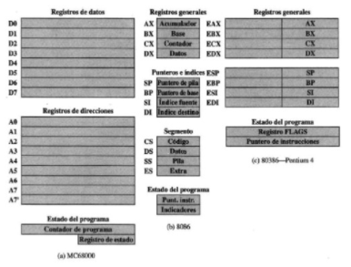

Resulta instructivo examinar y comparar las organizaciones de registros desistemas análogos. En esta sección, examinamos
microprocesadores de 16bits que fueron diseñados aproximadamente al mismo tiempo: el MotorolaMC68000 [STRI79] y el lntel 8086 [MORS78].

El MC68000 distribuye sus registros de 32 bits en ocho de datos y nueve de direcciones. Los ocho registros de datos
se usan principalmente paramanipulación de datos y también se usan en direccionamiento como registrosíndice.
El Intel 8086 usa un enfoque diferente para la organización de los registros. Cada uno de los registros tiene un
uso especial, aunque algunos registros se puedenemplear también para un uso general. El 8086 contiene cuatro registros
de datos de 16 bits que son direccionables como registros de bytes o como registros de 16bits, y cuatro registros punteros
e índices de 16 bits. Los registros de datos pueden utilizarse como de uso general en algunas instrucciones. En otras,
los registros se usan implícitamente.